📢
漢字卡通旨在用簡潔易懂的方式呈現漢字的原理和故事。
卡通字形通常選擇性地結合甲骨文、金文、戰國文字、小篆、隸書、楷書的字形，力求接近古代漢字字形，個人改變部分結構是為了與現代楷書形體更加相近或者更加易於理解。正文講解基於較為權威的古漢語字典，有時穿插有考據的拓展內容，個人對表述方面的改變一直力求忠於材料並使其更加風趣易懂。如有錯處或者改進意見，敬請指出。
⚖️
本作品在公共區域開放，釋放所有個人版權，歡迎轉載、使用及改進。
門
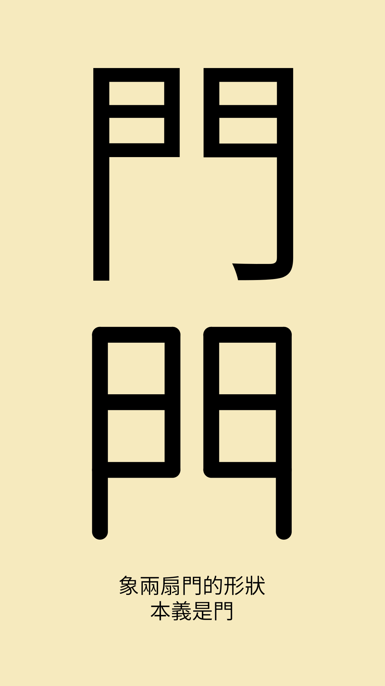
📖
- 漢語多功能字庫中的釋義及甲骨文字體
刀
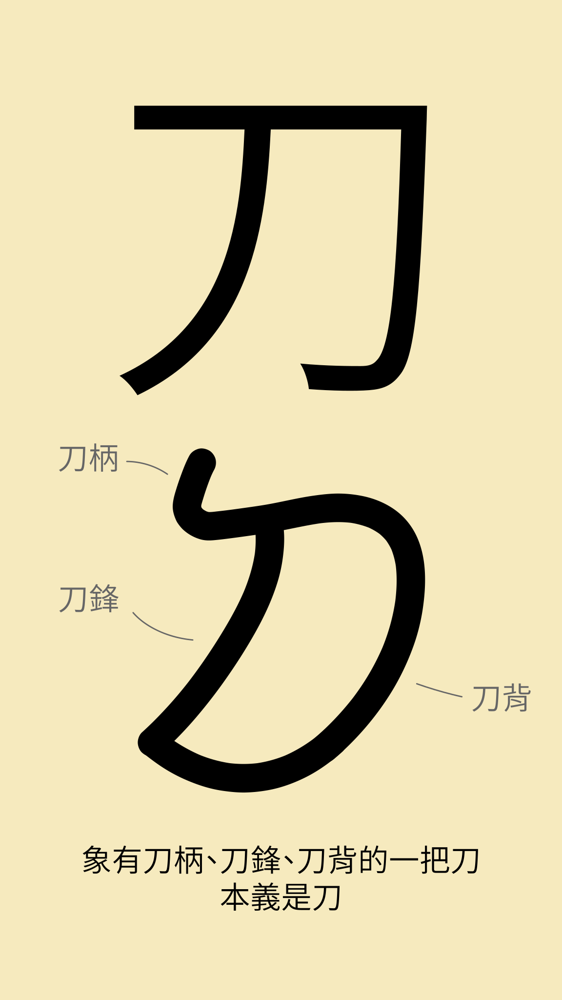
📖
- 漢語多功能字庫中的先秦貨幣圖案
- 中華語文知識庫中識字材料的講解
刃
📖
- 漢語多功能字庫中「刀」字的先秦貨幣圖案
- 中華語文大辭典中對於「刃」字的講解
力
📖
- 漢語多功能字庫中的形義通解
- 中華語文知識庫中識字材料的甲骨文字形及講解
土
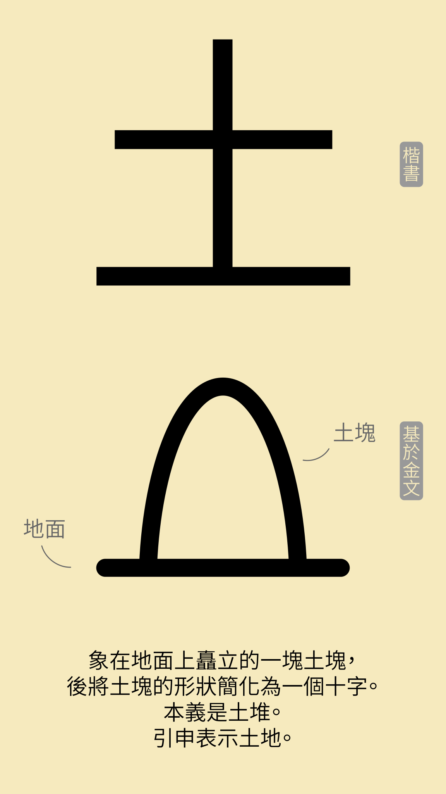
💬 我第一次學這個字的時候覺得有點奇怪，為什麼“土”是一個十字架✝️插在地上？跟基督教⛪有什麼關係？後來學習了甲骨文才了解“土”在甲骨文裡讀作“社”，表現古人堆土塊來祭祀土地神🛐，自篆書起簡化土塊為十字形。
📖
- 漢語多功能字庫中的形義通解
- 中華語文知識庫中識字材料的金文字形及講解
夕
📖
- 漢語多功能字庫中的形義通解
- 中華語文知識庫中識字材料的金文字形及講解
女
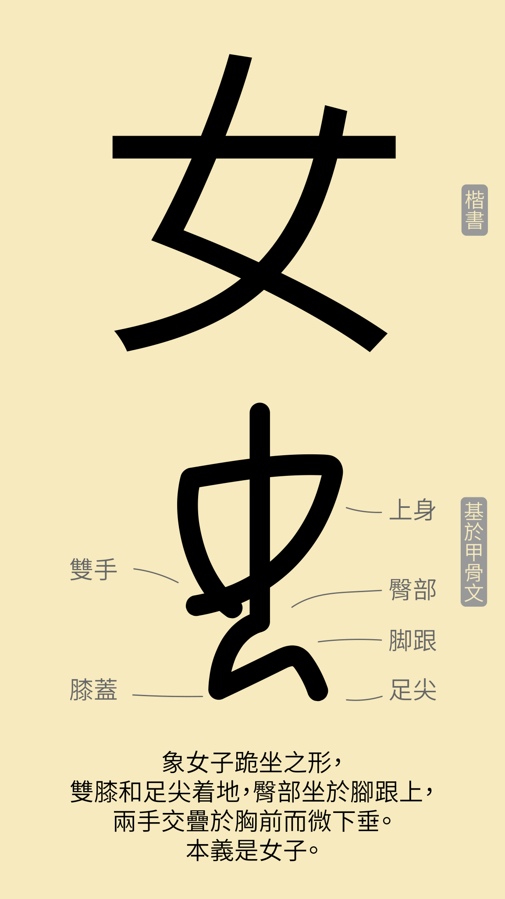
💬 大家看韓劇🇰🇷中的居家場景時，經常是一家子圍著一個矮桌跪坐著吃飯🍚，女主寫字打電腦🖥的書桌也很多是供盤腿坐或跪坐的矮桌。跪坐的傳統在日本🇯🇵也一直保留至今，一些日式餐廳和茶館仍然采取跪坐。今天中國人看來頗有異域風情的跪坐其實在古代叫「正坐」，是宋代以前的中國人正式的坐姿，其起源至少可追溯至商代（甲骨文中多有跪坐形態），後來傳到朝鮮、日本、越南、琉球等地。古漢語中，臀部接觸腳跟為「坐」，特指正坐；挺直上身而不着腳跟為「跪」。正坐時，雙膝應併攏着地，臀部壓足，雙手放在腿上。 北宋以後，隨著唐朝時胡人傳入中原的椅子在民間普及，中國人徹底改變了席地正坐的習慣。商代甲骨文的「女」字像正坐的女子形象，正坐是古代合乎禮儀的坐姿且不分男女，不是有人認爲用來體現女子地位低下的性別歧視。
📖
卡通參考
- 漢語多功能字庫中的形義通解
- 中華語文知識庫中識字材料的甲骨文字形及講解
小講堂（💬部分）參考
- 維基百科的「正坐」條目
子
📖
- 中華語文知識庫中識字材料的金文字形及講解
尸
💬
高能預警！前方有一大波僵屍來襲！🧟🧟🧟
相信大家對恐怖電影🎞️中的僵屍並不陌生，2009年發行的Plants vs. Zombies（植物大戰殭屍）遊戲🎮也受到熱捧，更不用提《鬼吹燈》、《盜墓筆記》、《魯班的詛咒》等熱門小説📚中的粽子與殭屍。此類中外作品中最可怕或者驚險的情節就是僵屍詐屍/復活后能力瞬間升級、變身妖魔💀。其實此類「詐屍」可以説是「古已有之」😲。古代祭祀時，生者因不忍見親人不在，乃以活人代替死者接受祭禮，甚至享用祭品，如《儀禮．士虞禮》：「尸飯」🧟🍚。上次講到宋朝以前的中國人以今天所説的跪坐為正規的坐姿，而比起跪坐，蹲着、屁股着地的坐姿較為舒適😊但非常不禮貌😒。唯一的例外是「尸」。由於受到尊敬和優待，尸在祭祀時可以屈膝坐在几上或地上，接受衆人的祭拜😎，可謂是「職業僵屍」的工作福利。
📖
- 漢語多功能字庫中的形義通解
- 中華語文知識庫中識字材料的小篆字形及講解
巾
📖
- 漢語多功能字庫中的形義通解及小篆字形
- 中華語文知識庫中識字材料的講解
木
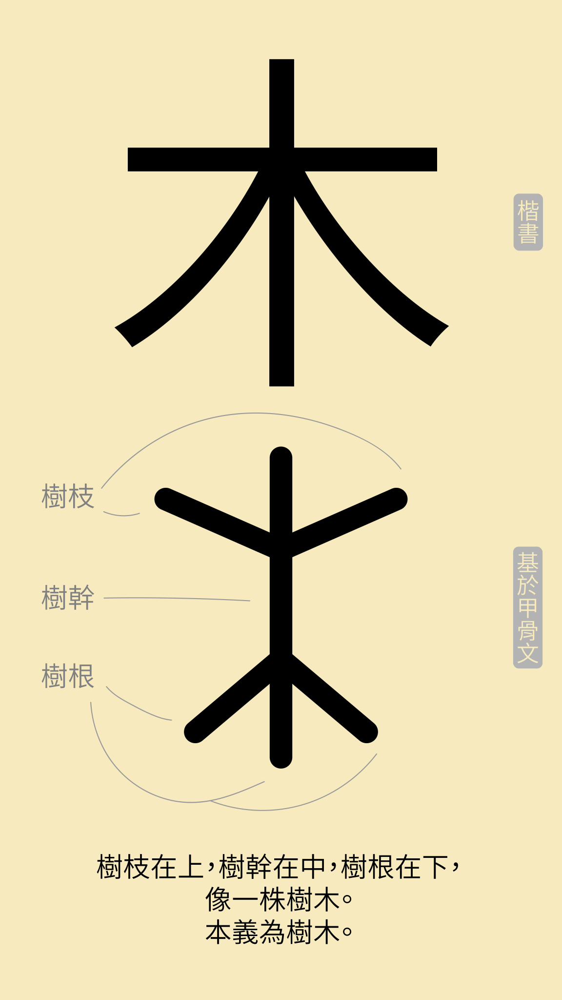
📖
- 漢語多功能字庫中的形義通解及小篆字形
- 中華語文知識庫中的漢字源流
本
💬
在中國神話傳説中，黃帝的史官倉頡仰觀天象、俯察萬物而創造了漢字。為了紀念倉頡造字之功，後世多尊其為「文字聖人倉頡先師」，如今盛行的倉頡漢字輸入法也用他命名。可實際上，漢字并非一人一時所造，而是經過了與其他人類文字同樣的發展路綫。人們先是通過觀察各種事物（如牛、羊、山、水、竹、衣等），然後用彎曲的綫條依樣畫葫蘆地臨摹，這些仍然只是圖案而不是文字。通過漫長的發展，漸漸形成了比較統一的畫風和更加抽象的形態，象形字就此誕生。隨著文字表達上的需要，象形字的瓶頸愈發明顯。社會事物紛繁，象形字擔負不了替萬物造型的任務。以手來說，靜止的狀態好呈現，其他手的多種動作，就不是線條所能表現的，更不用説看不見摸不着的感情。自然的下一步就是用純粹的抽象符號或者在象形字上加提示符號來表達更加複雜的含義，我們把這種字稱為「指事字」。下面十天我們就著重介紹「指事字」，從今天的「本」字開始。
📖
卡通參考
- 漢語多功能字庫中的形義通解及小篆字形
- 中華語文知識庫中識字材料對於「木」字的講解
小講堂（💬部分）參考
- 文字學淺說——賴慶雄
- 維基百科的「倉頡」條目
末
💬
《馬王堆．老子甲本》第57行：「合抱之木，生於毫末。」
📖
- 漢語多功能字庫中的形義通解及小篆字形
- 中華語文知識庫中識字材料對於「木」字的講解
亦
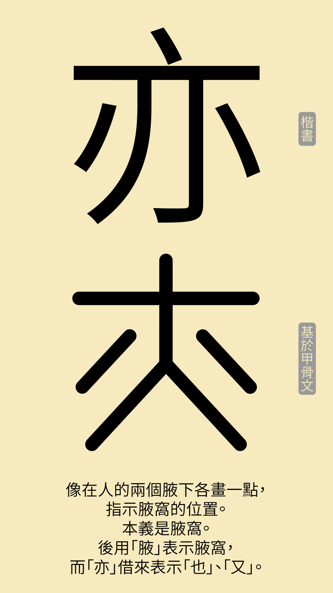
📖
- 漢語多功能字庫中的形義通解及甲骨文字形
甘

💬
糖，這個魔幻的詞包含着格林童話《糖果屋》中浪漫的幻想，也代表着我們對甜蜜生活的嚮往，甘美的口感陪伴着我們從小到大，也陪伴着華夏文明從古至今。
舊石器時期，人類依靠水果和蜂蜜獲取這種從母乳中嚐到的第一種滋味。從周代到唐代初期，長江中下游一帶的人們種植甘蔗來榨取糖漿，再使其冷卻固化爲糖塊，稱爲「石蜜」。從唐朝中期到南宋初期，古人引用從印度傳來的沙糖製作工藝，在甘蔗汁中加入草木灰或石灰來中和、沉澱雜質，提煉出結晶糖。由於不易潮解，方便儲存運輸，促進了中國糖業的繁榮。但對於居住在甘蔗產地之外的人們來說，糖仍是一種奢侈。從南宋到明代嘉靖年間，糖霜的製作方法從四川一帶傳到各地，比起砂糖水分更少，更純淨，更輕，存放時間更長。隨着糖霜工藝的分工化和規範化，產量大幅提高的蔗糖逐漸被做成普通人能夠品嚐的糕點和零食。明代後，中國人發明了黃泥水淋脫色分蜜法製作出了白沙糖，與我們今天吃到的愈發相近。
不過，正如糖果屋甜美的外表下隱藏着一個養胖孩子然後吃掉他們的巫婆，糖對人們健康的負面影響也愈加引起關注。糖的上癮性衆所周知，許多小孩從小喝慣糖水後不再願意喝寡淡的白水，我們的早餐、午餐、晚餐和零食幾乎一頓不離這種使人短暫地陶醉其間甚至忘記煩惱的物質。爲了維護學術威望和商業利益，一些權威營養學學者、政府（如美國、英國）、糖業公司和食品廠家（如可口可樂）長期贊助帶有偏見的科學研究來說服大衆：糖只是單純的一種營養品，屬於碳水化合物的一種，而脂肪才是各類健康問題的罪魁禍首。雖然當下沒有確切的研究指明糖的成癮性，但我們已經明確地認識到用糖代替脂肪並沒用阻止不斷攀升的肥胖率和糖尿病病例，而糖的攝入很有可能與肥胖、高血壓、高血脂和高血糖有關。總之，目前營養學方面還難以認定「適量」攝入糖的量是多少，但我們每個人可以在等待進一步研究結果公佈之前，謹慎地衡量我們每日的糖攝入量並加以控制。
📖
卡通參考
- 漢語多功能字庫中的形義通解及上博竹書字形
小講堂（💬部分）參考
- 糖的歷史：古人的甜味來源是什麼？從飴糖到蔗糖看中國的甜食文化——浩然文史
- Is sugar the world's most popular drug?——Gary Taubes
- The sugar conspiracy——Ian Leslie
- How Coca-Cola Disguised Its Influence on Science about Sugar and Health——Union of Concerned Scientists
- Obesity and Overweight Fact Sheet——World Health Organization
- Diabetes Fact Sheet——World Health Organization
- 維基百科的「糖果屋」條目
口
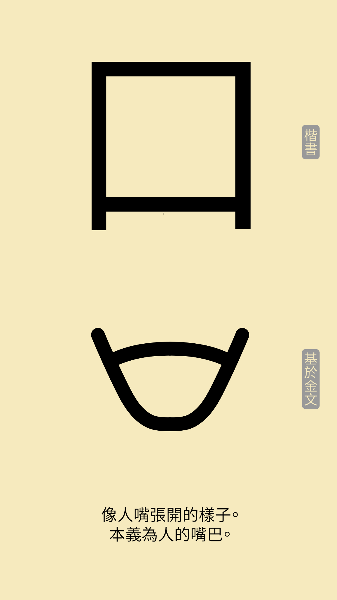
📖
- 漢語多功能字庫中的形義通解金文字形
- 中華語文知識庫中的漢字源流
右
📖
- 中華語文知識庫中的漢字源流
- 漢語多功能字庫中的睡虎地秦簡字形
曰
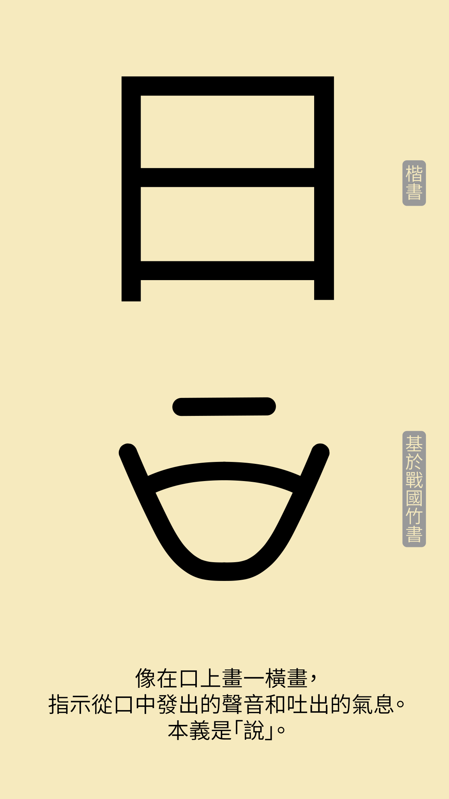
📖
- 漢語多功能字庫中的形義通解及清華簡一字形
上
📖
- 漢語多功能字庫中的形義通解及睡虎地秦簡字形
下
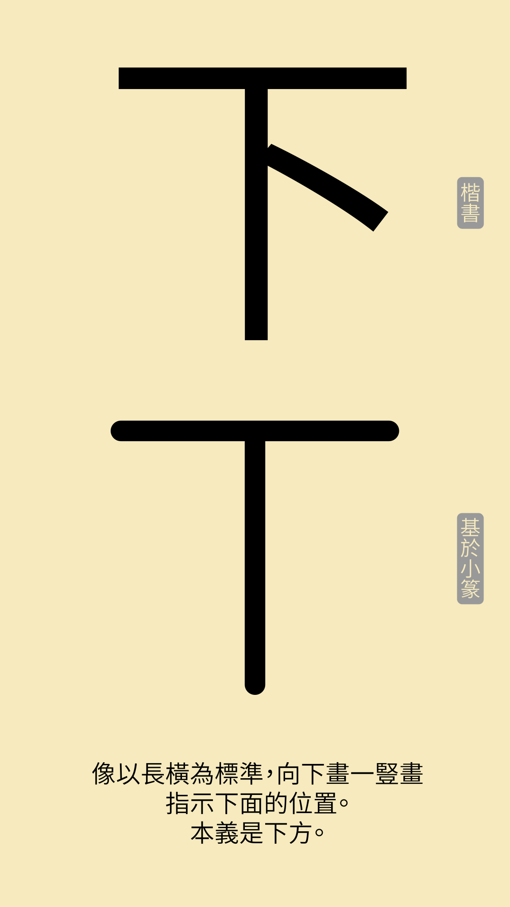
📖
- 漢語多功能字庫中的形義通解及睡虎地秦簡字形
中
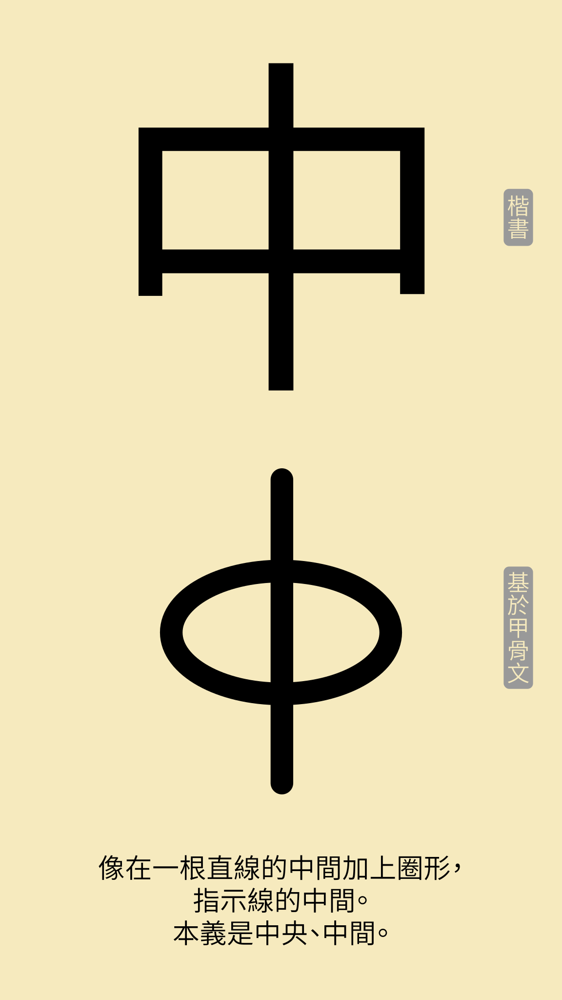
📖
- 漢語多功能字庫中的形義通解及甲骨文字形
左
📖
- 漢語多功能字庫中的形義通解及小篆字形
- 中華語文知識庫中的漢字源流
又
💬 “三”在古代表示多，漢字在記錄事物時為了減少筆劃、統一字形也形成了以三代多的習慣。雖然象形字如“又”可能沒有那麼形象，但卻在易讀和易寫之間趨於平衡。
📖
- 漢語多功能字庫中的形義通解
- 中華語文知識庫中識字材料的小篆字形及講解
叉
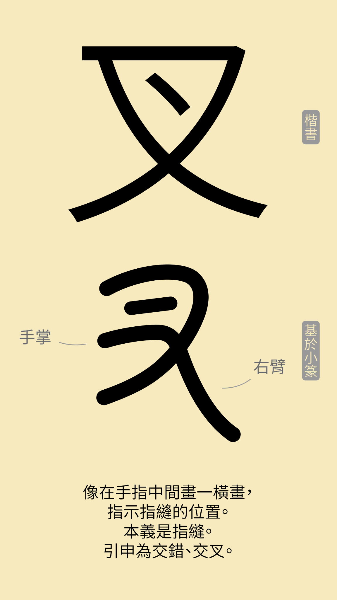
💬
中國人一般從小習慣使用筷子🥢吃飯，但對於許多西方人來説，筷子學起來非常麻煩😔，真正學會了可能還不如刀叉🍴方便。中國人學用刀叉比較容易，但一般人還是習慣用筷子。其實這種差異的主要原因是兩種截然不同的飲食文化。筷子適合合餐，衆人圍坐一桌，從一個盤子裏夾菜，因為人距離盤子一般較遠，長長的筷子方便快捷。刀叉適合分餐，個人從自己的盤子裏夾菜，因為不需要像合餐那樣伸手夠食物，較短的刀叉游刃有餘。當然，更多的是不同地域的烹飪習慣。中國人主要用炒🍳、燒🥘和蒸🍚，一般把食材切得細小才熟得快、嫩及入味。西方人主要是烤🦃、炸🍗、煮🍝和生吃🥗，一般是一大塊弄熟或者洗乾淨後各人在自己盤子裏用刀叉切割。筷子和刀叉在各自的餐飲文化環境中各顯神通，拋去個人情感不説，可謂各有千秋，更何況全世界的人喝湯基本都用勺子🥄。隨著中外交流愈加密切，更多的中國人因為去西餐廳用餐或者遷居海外而學會了刀叉，而更多的西方人也通過本地的中國餐廳和中國朋友學會了使用筷子。其實漢字和字母文字的關係正如同筷子和刀叉。漢字作為表意為主（象形字、指事字、會意字、形聲字的形旁），表音為輔（形聲字的聲旁）的意音文字，與表音的字母文字各有所長。漢字因為含有豐富的意義信息而易於理解字義。字母文字因為用簡單的字母來標音而易於找出發音。漢字不被字的讀音束縛（形聲字的聲旁只是為在同類事物中區分和提示讀音），超越方言（廣東話、四川話、上海話、北京話等）、語言（日語、韓語等）、和時代（中國自唐朝起通行楷書，現存最早的商朝甲骨文亦與楷書一脈相承），但缺點是字數多、結構複雜、難讀、一字多音、一字多義等。字母文字適合多數語言，上手容易，但缺點是必須懂語言才能理解文字、書寫比較冗長、不方便理解字義等。總之學習了兩種文字後，可以各取所長，互相彌補，可謂皆大歡喜。
📖
卡通參考
- 漢語多功能字庫中「又」的形義通解及小篆字形
- 中華語文知識庫中識字材料對於「又」字的講解及漢字源流對於「叉」字的講解
小講堂（💬部分）參考
- 汉字的优缺点——李大遂
- 維基百科的「文字」條目
友
📖
反
💬
「厂」在簡化字中代替工廠的「廠」，讀作chǎnɡ。傳統字中「厂」屬於象形字，本義是岩石峭壁，讀作hǎn。
📖
及
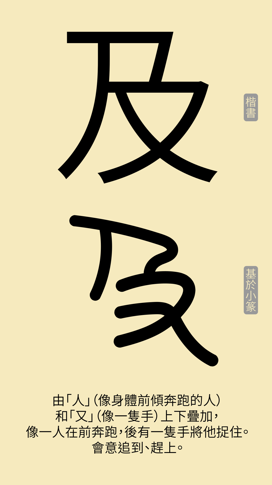
📖
取
📖
受
📖
囗
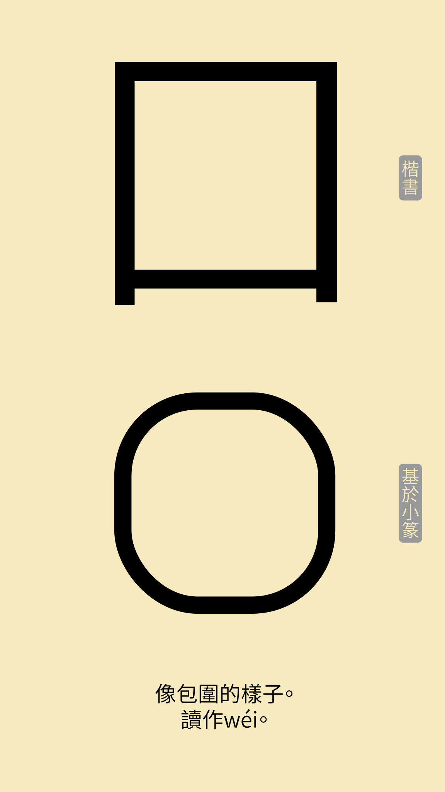
💬
囚難道是一張嘴把一個人給吃了？😃🍽️👨（苛政猛于虎也？）
圍、圈、園、圓外邊包裹的囗又和嘴巴有什麼關係？😕
由於漢字的許多基礎部件源於象形，難免有一些形態比較相似。在歷代漢字字體發展中，這些形態相似的結構不免被人錯誤地以爲是同一個結構、合併在一起或者用一個代替另一個。其中最常見的一對就是口和囗。因爲筆畫和形態幾乎別無二致，大家一般容易把兩者都叫做口（kǒu），認爲它們都表示嘴巴。可是，許多字如囚、圍、圈、園、圓等變得令人費解。其實它們外邊包裹的部首叫做囗（wéi），畫的是一個方形圍欄的樣子，表示包圍的意思，與口（kǒu）是完全不同的部首。 知道了這個區別，之前覺得奇怪的字就都有了清楚的意義。「囚」是一個人被關在圍欄裏，意思是拘押。剩下的幾個形聲字其實都和圍欄、包圍有關，「圍」意思是圍繞，「圈」意思是用柵欄圍起來的飼養牲畜的地方，「園」意思是用柵欄圍起來的種植蔬果花木的地方，「圓」意思是環形。感興趣的讀者可以去翻一翻字典，看看口（kǒu）和囗（wéi）兩個部首下面都有什麼字。
📖
- 中華語文知識庫中「囗」的漢字源流及小篆字形
- 漢語多功能字庫中「囚」、「圍」、「圈」、「園」、「圓」的形義通解
囚
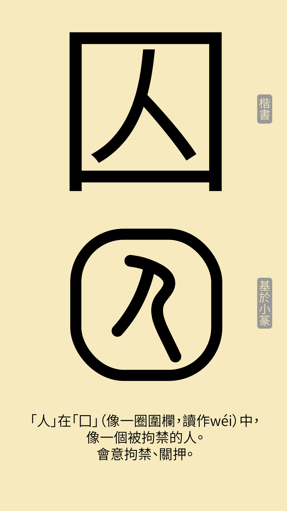
📖
囡
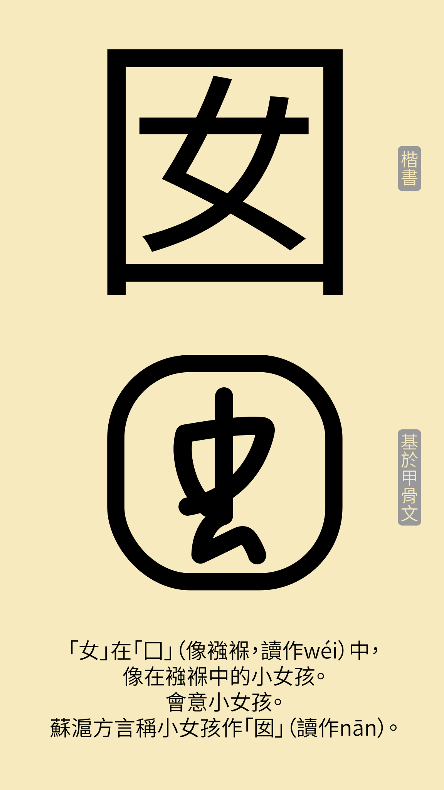
💬
清．王應奎《柳南隨筆》卷三：「漁家日住湖中，自無不肌粗面黑。間有生女瑩白者，名曰白囡。」
📖
因
📖
困
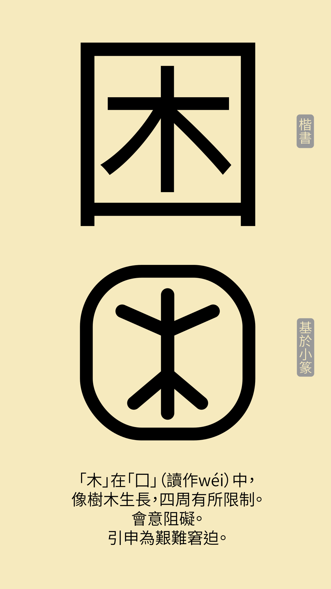
💬
《史記．卷八四．屈原賈生傳》：「而齊竟怒不救楚，楚大困。」
📖
几
💬
「窗明几淨」
📖
卜
💬
《左傳．僖公四年》：「初，晉獻公欲以驪姬為夫人，卜之不吉。」
📖